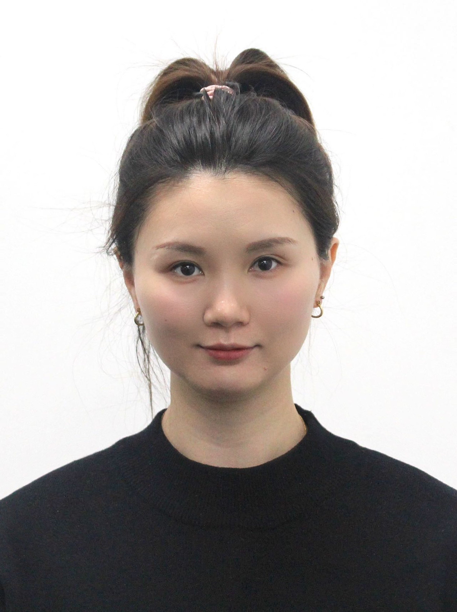

Multilingual Speech
Recognition
Extending speech recognition to unseen and low-resource languages through zero-shot adaptation and learning with limited supervision.
Speech & language research
Applied Scientist Amazon AGI
I am an Applied Scientist at Amazon AGI, working on conversational speech foundation models. My research spans multilingual speech recognition, speech translation, and reward modeling, with broader interests in speech generation.
I received my PhD in Computer Science from Monash University, Australia, in 2025, advised by Gholamreza Haffari and Ehsan Shareghi. During my PhD, I interned at Meta FAIR, where I worked on zero-shot speech recognition under the mentorship of Michael Auli.

Extending speech recognition to unseen and low-resource languages through zero-shot adaptation and learning with limited supervision.
Connecting speech and text representations through efficient adaptation and synthetic training data, with work on simultaneous translation.
Building reward models to assess conversational speech quality and improving speech foundation models through preference-based post-training.
Selected work
MMS Zero-shot extends speech recognition to new languages using a small text sample, without labeled speech in the target language. Developed during my Meta FAIR internship, it uses romanization and training across 1,078 languages, reducing average character error rate by 46% relative to prior work across 100 unseen languages.
Constructing speech translation training data on the fly by retrieving and stitching spoken words, including for code-switching settings.
Adapting pretrained speech representations without task-specific labels to improve fine-tuning speed and performance across six speech processing tasks.
A Transformer-based adaptor that bridges the modality gap between pretrained speech encoders and text decoders. A modified version was adopted as the length adaptor in Meta’s SeamlessM4T architecture.
Unsupervised multi-document summarization through sentence graphs and compression. Developed during my master’s research and previously adopted by Sandstone AI for summarization in its product.
Research & industry
Dec 2024 — Present
Applied Scientist
Built and deployed a speech reward model for automated conversational quality assessment, alongside scalable multilingual data generation for preference-based post-training.
Aug 2023 — May 2024
Research Scientist Intern
Led MMS Zero-shot research, reducing average character error rate by 46% across 100 unseen languages without labeled speech in those languages. Mentored by Michael Auli.
Jul 2020 — Aug 2023
Research Assistant · Melbourne, Australia
Developed speech–text adaptation methods for low-resource translation, including M-Adapter; a modified version was adopted in Meta’s SeamlessM4T architecture.
Oct — Dec 2022
Visiting Researcher
Worked with Satoshi Nakamura to build NAIST-SIC-Aligned, an English–Japanese interpretation corpus supporting research on simultaneous translation.
Education
Melbourne, Australia
PhD, Computer Science 2021–2025
Master of Data Science 2018–2020
Teaching
Co-lectured and tutored FIT5217 at Monash University as a Teaching Associate in 2023.
Away from the desk
Outside research, I enjoy reading, travelling, hiking, running, and rock climbing.